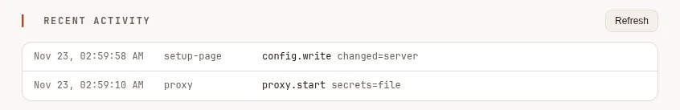
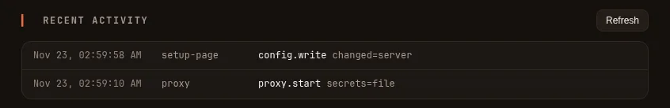

Help5 min read
Security #
An agent runs commands and writes files on your machine; that is its job. This page says what Maple Harness does to keep that safe, and what you should do.
In plain words #
- What it is. What Maple does to keep an agent that runs commands safe, and what you should do.
- The short version. It asks before it writes or runs anything; your keys are in your system keyring; the setup page answers only on this machine; and you can put a password on it and contain the agent's commands.
- The clicks. On the setup page, the Access group in the sidebar: Page password (a password for the page), Remote & tokens (devices and tokens, each revocable), and Recent activity (who did what).


Reporting a problem #
Email Kinn Coelho Juliao at <kinncj@gmail.com> with what you found, how to reproduce it, and the version
(maple-harness version). Please allow a reasonable time to respond before disclosing it publicly. Reports
are handled in confidence.
What it does for you #
- It asks first. Every tool call passes your rules. By default it asks before writing a file or running a
command, and a
denyrule is absolute.--yoloskips the asking, never the denying, and it must be given on the command line: a configuration file can never turn it on by itself. - The shell can be contained. With bubblewrap on Linux (optional) or the built-in sandbox on macOS, shell
commands can write only in your project, cannot see your credentials, and run with a scrubbed environment.
Where the system supports it (
/sandboxsays), contained commands cannot reach the proxy's setup page, so they cannot change your settings or read your keys through it. While a session is shared for remote control the shell also has no network unless you allow it. Withsandbox.when_unattended: onit is on whenever commands run without your approval. See The shell sandbox. - The file tools keep out of secrets. They refuse your SSH keys, cloud credentials and shell history, and write only in your project, the temp directory and folders you list.
- Your sign-ins stay out of the config. Keys go in your system keyring, and the configuration holds only a reference.
- It talks only to your own proxy, or one you chose. By default the harness uses its own proxy on this machine,
which proves it is yours on every connection before anything is sent, with a key only you can read
(
local-identity.keyin your settings folder; see Your data). A proxy that cannot prove it (an older one, or one run as another user or in a container) keeps working, but receives nothing secret, tools ask before running and the Claude delegate stays off, and the harness asks before a session starts on it; one that claims to be yours and cannot prove it is refused. See Verified and unverified proxies. Any other proxy is used only when you connect to it yourself (maple-harness proxy connect, an advanced setup for CI and containers), with its access token. See Connect the harness to a proxy. - The setup page is local. It listens on this machine only, and refuses to listen anywhere else. A team that turns on single sign-on chooses a second address for it, where every visitor signs in with their company account and can do less than on this machine.
- The setup page can have a password. Off by default, so any program or browser on this computer can open the
page. Set one under More > Protect this page (or
maple-proxy setup-password set) and only a browser that signs in with it can; the Maple Harness commands keep working without it. When the password was set in a terminal (maple-proxy setup-password set), a browser signed in with it may also set a provider's key to a new${env:NAME}or${secret:name}reference. Otherwise the page refuses new references: any program here could open the page, or turn a password on from the page itself, and send one of your keys to a server of its choosing. See The proxy and Proxy settings. - Devices get their own tokens. Each paired device has its own token that you can limit to some folders and revoke at any time. Pairing codes work once and expire in five minutes.
- A share reaches one session. A share link lets one person watch one session until it ends, and by default that is all: they cannot send, approve or see any other session. A link made with Can drive this session also lets them send messages and answer approvals in that session, which means they can run commands on this computer through it, within the sandbox and permission rules that session has, and only while the session is in ask mode; it still cannot reach other sessions, change settings, answer "always allow" or approve a command outside the sandbox, and it asks you to confirm before it is made. Revoking the device that made a share stops it. Either way they see everything that session shows, so do not share one that works with secrets. See Sharing one session.
- Downloads are checked. The installer and
updateverify every file against the release'sSHA256SUMS.
What you should do #
- Treat a device token like an SSH key. It is a shell on your computer. Prefer pairing codes, keep tokens out of chats and screenshots, and revoke a lost phone straight away.
- Use Tailscale, or another private network, for remote control. Do not forward the port through your router to the internet. See Control it from your phone.
- Install bubblewrap on Linux if you share a session or run untrusted projects, and run
maple-harness doctorto confirm the sandbox works. - Set a password for the setup page if other people or programs you do not trust use this computer. Forgot it?
Run
maple-proxy setup-password resetin a terminal. A command the model runs as you, with the sandbox off, could run that too: the password protects against other programs and browsers, and turning the sandbox on closes the rest. - Only add MCP servers you trust. A server that runs as a program on your machine has your permissions.
- Use
--yoloonly in a throwaway checkout or a container. - Keep it up to date:
maple-harness update.
A model can be steered by text in a file it reads or a web page it is shown, and nothing can make a model reliably ignore hostile text. The permission prompts are your protection, so read them.
The models you configure receive what you send them. With Apple's on-device model or a local server, nothing leaves your machine; with a cloud provider, your prompts and any file content the agent sends go to that provider.
maple-harness doctor checks that these protections are in place on your machine.